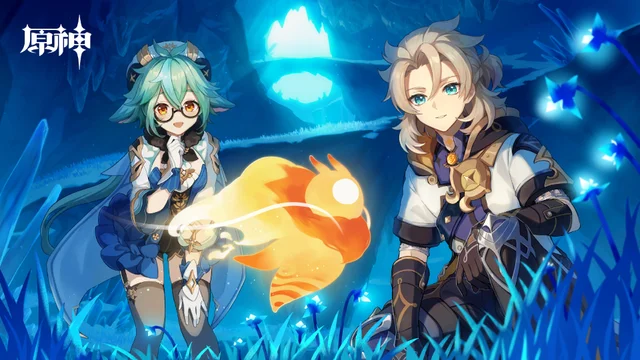
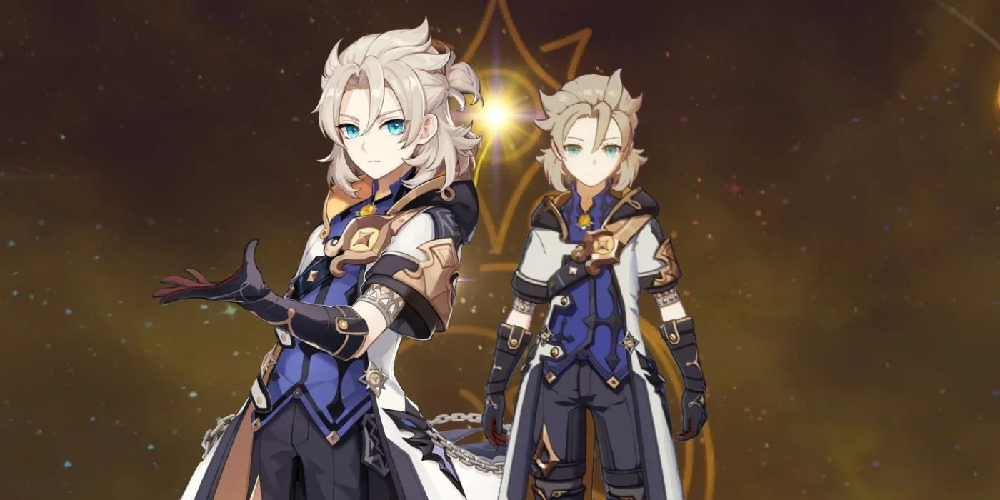

Albedo Guide
Albedo is a Geo Sword Character that specializes as a Burst Support.
Overview
Albedo is built to be an incredible Burst Support, with his low cooldown abilities, AOE damage, and buffing
capabilities. He is a flexible unit and can fit on many teams, even those without Geo Resonance.

Elemental Skill: Solar Isotoma
Albedo places a flower, which does damage in a minor AOE. Afterwards, every time an enemy takes damage, the
flower creates a Transient bloom and deals extra damage. This can happen a maximum of once every 2 seconds.
Each bloom has a 67% chance to produce a Geo particle. The procs can happen every 2s but due to lacking attack
frequency you will usually average one proc every ~2.5s. If you stand on the Solar Isotoma, it will lift you
up like an elevator.
This skill is very useful for buffing normal attacks, as well as acting as a quick energy generator with
its low cooldown and frequest energy procs. Addtionally, if Zhongli is used, it can resonate with his Geo
Pillar to deal extra damage.
Elemental Burst: Rite of Progeniture: Tectonic Tide
Albedo summons Geo crystals as an initial hit, damaging his enemies. Additionally, if the burst is performed
within the range of a flower, Fatal Blossoms are created that damage nearby enemies. The fatal blossoms are
pseudo-RNG, and have quadratic scaling. This means that one blossom is assigned to one enemy, and then when
all enemies within the circle are accounted for, the rest are distributed randomly, but with a predisposition
towards generating near an enemy.
This burst has lots of i-frames, allowing a long window to dodge an attack. Additionally, since the burst
is quardatic, large groups of enemies take even more damage. It scales great with attack, but requires
energy that Albedo can't get unless he has another Geo teammate, or C1.
Constellations
C1: Flower of Eden
The value of this constellation depends heavily upon the comp that Albedo is in. In a mono-Geo comp, Albedo
has no use for this constellation. In some other teams, regardless of whether Albedo is working with an energy
deficit, it can be a DPS loss to Burst with him and making his Burst irrelevant. However, in a comp where
Albedo is the sole Geo in the team, his Burst is required, and there are no team energy generators, this
constellation is incredibly valuable.
C2: Opening of the Phanerozoic
C2 is an upgrade in damage. C2 mostly fixes Albedo’s split scaling issues and makes all of his skills scale at
least partially with def. This constellation is difficult to evaluate, in part because its value is highly
dependent on Albedo casting his burst which actually does not impact damage in some comps due to Albedo’s
burst not always being optimal to use (such as in Xiao comps). However, if Albedo bursts regularly, this
constellation is very valuable.
C3: Grace of Helios
+3 to his Skill. Direct damage increase. Not bad.
C4: Descent of Divinity
Garbage. Don't get unless you plan on using a Xiao-Albedo comp.
C5: Tide of Hadean
+3 to his Burst. Direct damage increase. Works great with his other constellations.
C6: Dust of Purification
C6 marginally strengthens Albedo’s capabilities as a sub-DPS by increasing the damage of his teammates. Note
that just like the dmg% from Geo resonance, this bonus only applies to units on field and does not snapshot,
meaning that this constellation is only beneficial towards the carry of the team, and thus can be rather
niche.
Teams
Albedo generally works best with at least one other Geo teammate, but can work well on a variety of teams.
Albedo + Zhongli
Albedo + Ningguang